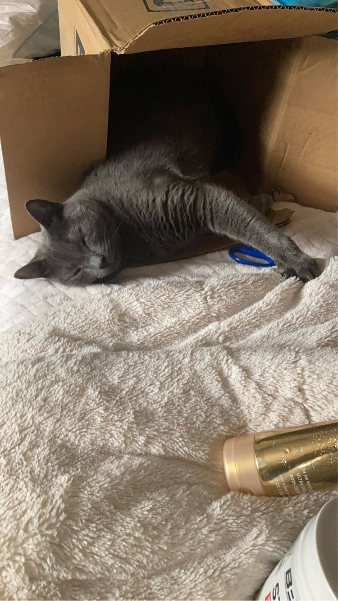
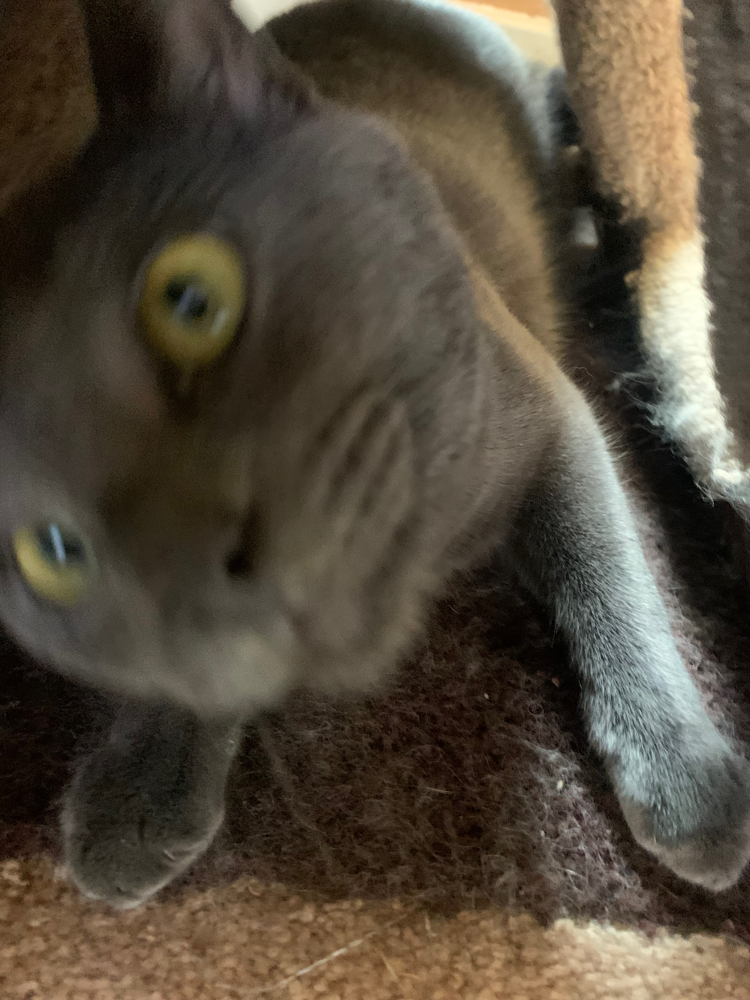
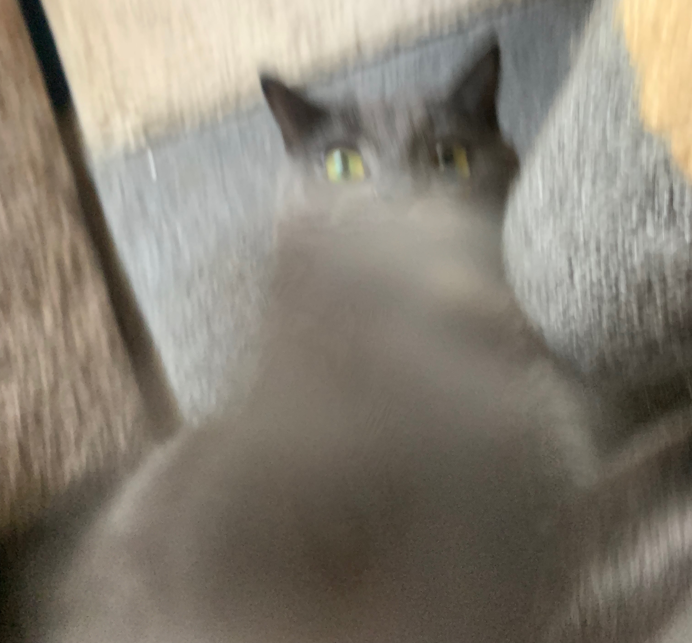
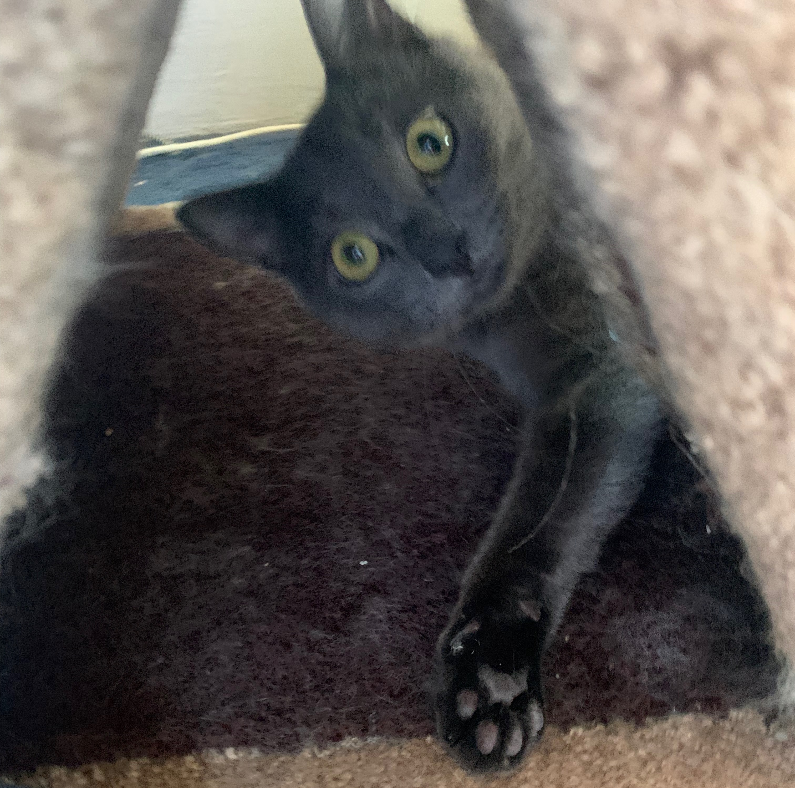
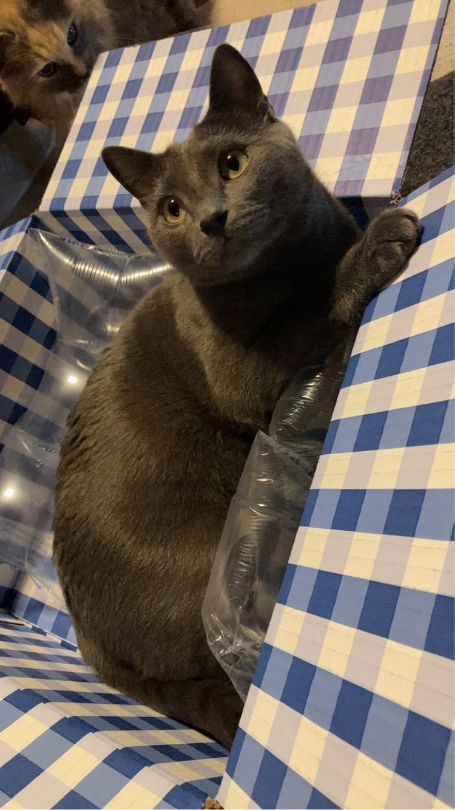

Chato is a very wild boy. He likes to stare at birds in the early
morning, use the cat box excessively, and look stoic in his free
time.

More Lovely Pics of Chato

Chato when he is overcaffeinated

Chato swiping the camera at the paparazzi

Chato about to attack from the corner

Chato looking stoic
“Chato had a very impulsive nature and acts on the whimsical free will
God gave him. The flicks of his tail are most prominent when he’s
happiest or when too tired to open his eyes… his tail will still be
flicking to let anyone nearby that ol Chato boy is content”
-Starla, at night
Call to action! It's time!
Sign up for the Russian Blue newsletter by clicking that button right over there!